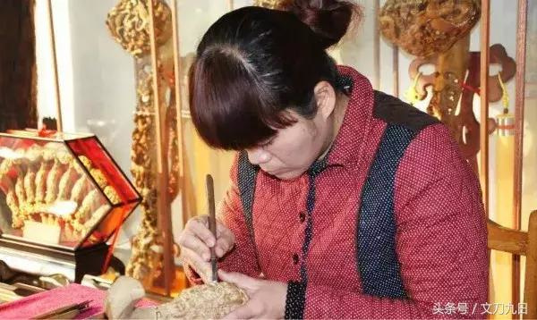
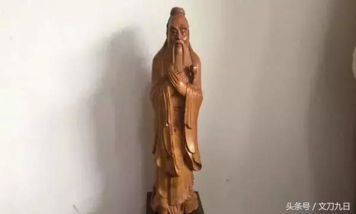
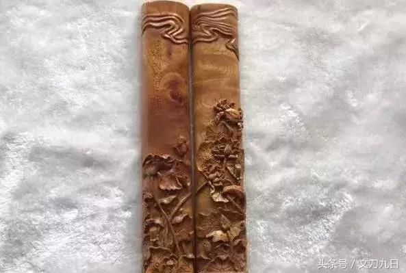
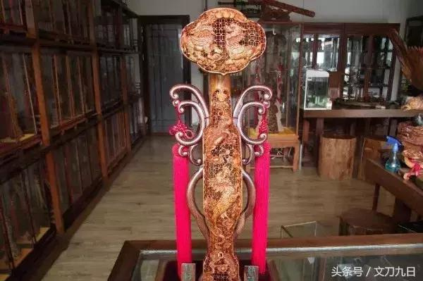
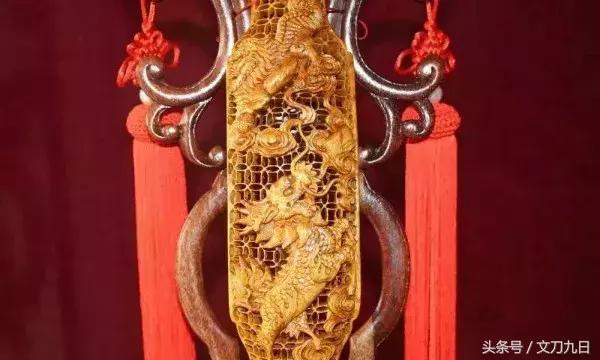
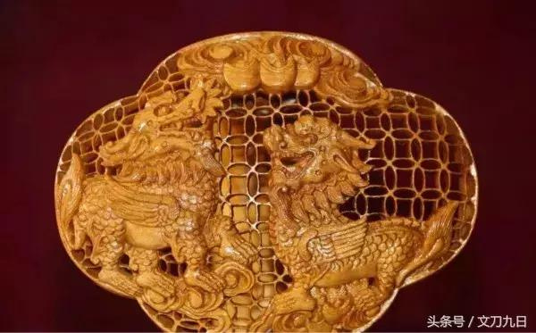
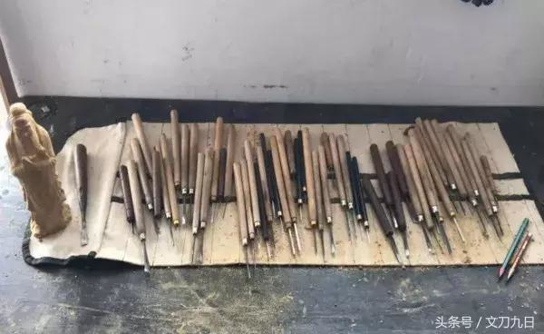
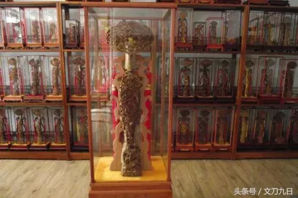
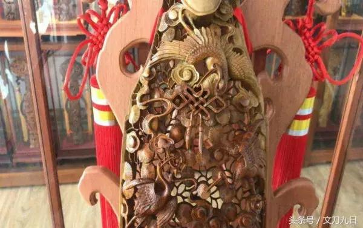
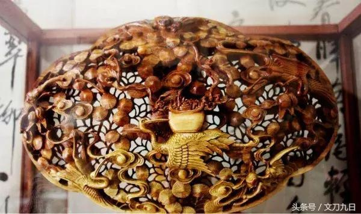

匠心筑梦，砥砺前行——访曲阜市楷雕技艺传承人高莉洁老师
鲁风遗韵2017-11-04 13:30
用“含辞未吐，气若幽兰”来形容她，再合适不过了。她气质优雅、举止端庄，在交谈过程中她温柔、安静的眼神总是能够引领我到一个静谧的古色古香的环境中，让我安静下来，看着她，雕刻楷木、爱抚楷木。这就是高莉洁老师从事曲阜楷雕艺术创作二十余年所拥有的独特魅力。一九九五年起，十六岁的高莉洁在楷雕大师、国家级非物质文化遗产代表性传承人——颜景新老师悉心指导下，开始学习传统楷雕工艺品，如意、笔筒、孔子像、拐杖等，兼习篆刻。

▲高莉洁老师工作照
年复一年的研习使得高莉洁老师在雕刻如意方面游刃有余。如意本名“搔枝”，它弯弯曲曲、精巧美观。老师依照材料的质地，在上面精雕细刻出美轮美奂的图案，或行云流水、风景名胜；或飞鸟走兽、人物故事。古代的达官贵人、墨客文人喜欢拿它玩赏或指划景物，若用它来搔背，更是得心应手，便取“事事如意”之意，名曰“如意”。最早的如意是用铁、木、玉、竹、骨等质料制作的，而孔子家乡曲阜的楷木如意则是流传近千年的特色工艺品。同时，高莉洁老师也借助时代的发展让自己的楷雕技艺不断进步着。

▲作品《孔子像》
例如传统的图案有祥云、鹿、鹤、龙、凤、麒麟、中国结等，她喜欢将图案随意组合，创造出迎合时代特色的楷雕，如荷花与螃蟹雕刻在一起，寓意为“和谐世界”，期盼社会和谐、风调雨顺。高莉洁老师创作的楷木雕相比其他楷木雕最具有特点的是以镂空、透雕工艺为主，并融入园雕、浅浮雕等工艺，在不断的创作中，工艺愈加精湛。近年来环保问题导致多家手工艺店面整改，但是，高莉洁老师于2006年创立的“圣熙堂楷雕店”一直红火经营着，追根究底就是高莉洁老师在追求效益的前提下，从选料到成品一直注重环保，尤其是成品的处理方式，她用天然蜂蜡打蜡，用热风机烤蜡进入雕刻内，再用天然核桃油对楷木雕进行保养。所以说，一项非物质文化遗产的传承，不单单是技艺的传承，更是品质的优化和工艺的发展。

▲作品《和谐世界》镇纸
《庄子·逍遥游》中提出“至人无己”的状态，“无己”是精神境界最高的人达到的一种逍遥的人生境界。初学习楷木雕，要先磨刀、刻章、干杂活一年多，对于一个心浮气躁的少年，当然会有很多急于求成时，便会受伤，由于受伤是经常的事，老师并没在意，等伤口长好后，发现自己的手指的一节无法打弯了，这才知道自己手指的肌腱割断了。有时候针挫插进手里，拔出来还有肉丝。十指连心，我甚至无法想象，我面前这个柔弱的女艺人，是怎样坚持过来的，当我问到“为什么受了那么大的伤还坚持做下去？”时，老师用“很正常的”、“皮实”、“没什么”来形容当时碧玉年华却手指伤痕累累的她。朽木不可雕也，当买来的材料不适合做楷雕，也只能废掉了，金钱与时间也在浪费了。工欲善其事必先利其器，高莉洁老师为了保证自己的楷雕完美，所有的雕刻工具都是自己做的。多年来，改行的很多，经济、女孩子有了家庭孩子等等原因。但是面对一切困难，老师从来没有想过放弃，她觉得这很正常，自己的想法很少，根本没有想过“放弃”二字。高莉洁老师最得意之作就是创作了两年之久的1.2米的楷雕如意《福禄寿如意》，凭借它，老师先后被评为济宁市级、山东省级民间手工艺大师。其作品《招财纳福》顶端有一公一母貔貅，全身雕刻有狮子、金蟾、麒麟、龙龟，灵活生动的五瑞兽在贽钱纹镂雕的映衬下栩栩如生，传达出来福寿安康的理念深受好评，并且多次获得国家、省、市级奖项，今年还获得了“山东省工艺美术金奖”。非遗传承人们，什么都不想，达到“无己”的状态，成就自然而来；而我们，做事之前想的太多，最后可能一点成就也没有。想法要纯真，达到“无己”才能成为“至人”。这是非遗传承人在传承技艺的同时所向全社会表达的态度，也是当下需要展现给全世界的中国态度。

▲作品《招财纳福》如意全景

▲作品《招财纳福》如意局部

一件如意成品，要经过选料、解木、下料、整形、画图、切、削、净、刻、打磨、上色、打蜡等十几道工序才能最后完成。按照人们想要的如意大小，这按照比例将料取出，做出如意的大形。再用雕刻刀将原料抢、削成形，而后用锉子锉，使其外形圆润光滑。然后用毛笔蘸墨在如意上画出所刻纹样，再根据线稿将图案的层次、布局用刻刀切出。从选料开始，高莉洁老师就层层把关，多年的经验让她可以辨别楷木内部质量，她一年做十件左右的精品。我问她：“一直做一件事会不会有倦怠期，像我们学习一件事，会有反感期、停滞期的。”“不要漫无目的的一直做一件事，在做的过程中要换一换想法，期间要有构思，想想细节怎么处理，不要急于求成。”她说。就像楷雕不能急于求成，非遗传承人传承给我们的是一种不要急于求成的心态。在浮躁的年代，勿忘初心、谨慎沉稳，方得始终。

▲老师亲手制作的工具
对于这次来到我校进行学习，高莉洁老师很是以之荣幸。在与五十多名非遗传承人进行交流、切磋过程中，老师发现核雕与楷雕刀法虽有不同但也有相通之处，可以相互借鉴。还可以跟着学生进行绘画、书法方面的学习。她说：“希望借助山艺这个平台将楷雕发扬光大，不仅仅让中国知道，要让全世界知道中国的传统文化的魅力。”老师看到我们造型基础课，自己也有了回去之后想要进一步学习绘画的想法，增进自己的技艺。老师还说：“文化遗产专业提供的环境、工具很好，你们学习的拓片、装裱等都是很好的手艺，机器永远无法取代，一定要珍惜时间多多学习。”

▲作品《福禄寿如意》全景

▲作品《福禄寿如意》局部

非遗传承人所传承的不仅是传统的技艺，更是匠人之心、中国之魂。近年来，国家对非遗的支持让高莉洁老师有了去发扬楷雕的底气，市场越来越广阔也让楷雕艺术得到了普遍的认知度。时代在发展，中国在进步，希望非物质文化遗产传承人得到保护、非物质文化遗产得到发扬。